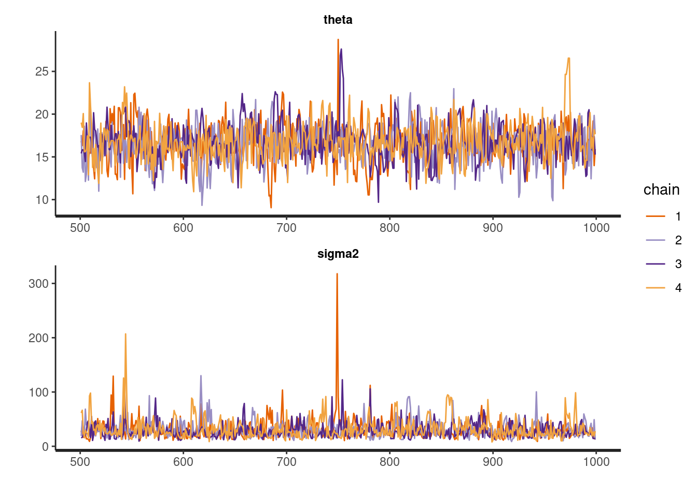
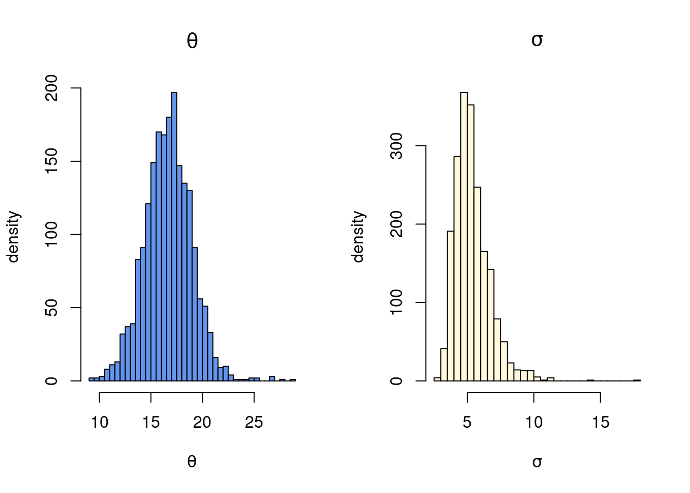
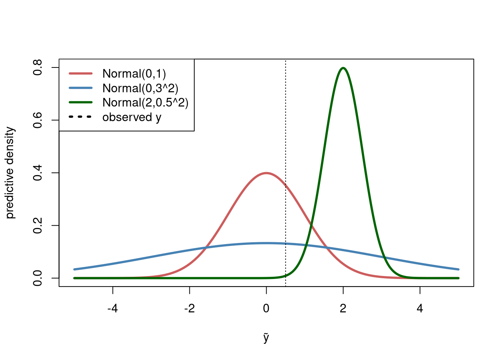

Stan is a probabilistic programming language. This basically means that it is a language for performing statistical inference using a convenient model syntax where all the inference and prediction machinery is handled by the language. Stan is mostly used for Bayesian inference either by
simulating from the posterior distribution using Hamiltonian Monte Carlo (HMC) or
approximating the posterior distribution using variational inference (VI) methods.
Stan can also be used to obtain maximum likelihood estimates by optimization on a posterior with a uniform prior distribution on the parameters.
The backbone of both the HMC and VI methods is efficient automatic differentiation to automagically compute gradients, which makes it possible for the user to only specify the model and let Stan take care of all the rest.
The user expresses the model and prior in a special Stan syntax, which is then parsed to C++ and eventually compiled to machine code.
We can install R package rstan as any other package (use the options below for using all cores and avoiding re-compilation when not needed:
#install.packages("rstan)library(rstan)
Loading required package: StanHeaders
rstan version 2.32.7 (Stan version 2.32.2)
For execution on a local, multicore CPU with excess RAM we recommend calling
options(mc.cores = parallel::detectCores()).
To avoid recompilation of unchanged Stan programs, we recommend calling
rstan_options(auto_write = TRUE)
For within-chain threading using `reduce_sum()` or `map_rect()` Stan functions,
change `threads_per_chain` option:
rstan_options(threads_per_chain = 1)
Stan will take care of the posterior sampling, but clearly needs to know about all aspects of the model, data and prior. Stan has a special syntax for defining the statistical model and its parameters. The Stan parser then translates the model into C++ code which is ultimately compiled to fast machine code. The model definition can be written either as a separate Stan file, or as a simple string which is then passed to the parser.
All variables used in the Stan program needs to have defined types. Stan needs to know if a variable is integer (whole number), real number, vector or a matrix. It also needs to know about any restrictions on the parameters, so that the HMC algorithm does not propose invalid parameter values. For example,
a parameter declared as real<lower=0> means that the parameters is a continuous positive number (so called floats).
int<lower=0, upper=1> is a integer restricted between 0 and 1, that is, it is a binary variable that can only take on the values 0 and 1.
The syntax vector[n] is a vector with n real numbers.
Note that the default type of the elements in a vector is a real numbers, so that when we do not specify the type the numbers are assumed to be real.
Data includes also prior hyperparameters
Stan’s use of the term data is a little different from the usual terminology: data includes the actual data, but also all prior hyperparameters.
The Stan model syntax, here expressed as string named iidnormal :
iidnormal ='// data and prior hyperparametersdata { // data int<lower=0> n; vector[n] y; // prior real mu0; real<lower=0> kappa0; real<lower=0> nu0; real<lower=0> sigma20;}// specify which are the model parametersparameters { real theta; real<lower=0> sigma2;}// the model connects parameters to the datamodel { sigma2 ~ scaled_inv_chi_square(nu0, sqrt(sigma20)); theta ~ normal(mu0, sqrt(sigma2/kappa0)); y ~ normal(theta, sqrt(sigma2));}'
Stan code is not R code
The above code is not R code. It is Stan’s special syntax that will be parsed to something useful for HMC to work on.
Note how the above code has three sections enclosed by angle brackets {}:
data - this is where all the data used by model is defined. Recall that also values for the prior hyperparameters is considered data in Stan. We see that the data will be a vector y with N elements. The four hyperparameters in the prior are specified, where we for example see that \(\kappa_0\) is positive real parameter.
parameters - this specifies the parameters of the model. The HMC sampler will sample from the joint posterior of all the parameters listed here. The iid normal model has only two parameters \(\theta\) and \(\sigma^2\), both a real and \(\sigma^2\) has to be positive.
model - this is the part that defines the prior and model, using data and parameters defined in the previous two sections. Stan has a large number of pre-defined statistical distributions, including scaled_inv_chi_square for the \(\mathrm{Inv-}\chi^2\) distribution, and a normal distribution; note that the normal distributions is defined using the standard deviation, not the variance (as in R). Finally, the last line of the model definition section y ~ normal(theta, sqrt(sigma2)) uses a short-hand syntax where Stan will understand that the elements of the data vector y are iid from a normal distribution with mean theta and standard deviation sqrt(sigma2). Alternatively, this part can be written as loop:
model { sigma2 ~scaled_inv_chi_square(nu0, sqrt(sigma20)); theta ~normal(mu0, sqrt(sigma2/kappa0));for (i in1:n){ y[i] ~normal(theta, sqrt(sigma2)); }}
Stan comments
Any line starting with // is a comment and is ignored by the Stan parser.
Now that the model is defined, let us set up the data and prior hyperparameters. Here we analyze the internet speed data from Chapter 2 in the Bayesian Learning book:
# Set up the datadata <-list(n =5, y =c(15.77, 20.5, 8.26, 14.37, 21.09))# Set up priorprior <-list(mu0 =20, kappa0 =1, nu0 =5, sigma20 =5^2)
The code above is plain R code and will run in R.
Now, finally we throw the model definition, data and prior hyperparameters to the stan function to sample from the posterior. Note that I pack together the data and prior list in the data argument to the stan function. We could have define these together from the start, but it is cleaner to separate data and prior hyperparameters like I have done here. I have four cores on this computer so Stan will run four runs in parallel, each with iter = 1000 iterations and different initial values. Each such run is referred to as a chain in Stan. Have multiple runs is useful for diagnosing convergence: the draws from different runs should give rather similar posteriors (for example histograms). The argument refresh = 0 makes Stan print less to the screen while running HMC.
fit =stan(model_code = iidnormal, data =c(data, prior), iter =1000, refresh =0)
Trying to compile a simple C file
Running /usr/lib/R/bin/R CMD SHLIB foo.c
gcc -I"/usr/share/R/include" -DNDEBUG -I"/home/mv/R/x86_64-pc-linux-gnu-library/4.1/Rcpp/include/" -I"/home/mv/R/x86_64-pc-linux-gnu-library/4.1/RcppEigen/include/" -I"/home/mv/R/x86_64-pc-linux-gnu-library/4.1/RcppEigen/include/unsupported" -I"/home/mv/R/x86_64-pc-linux-gnu-library/4.1/BH/include" -I"/home/mv/R/x86_64-pc-linux-gnu-library/4.1/StanHeaders/include/src/" -I"/home/mv/R/x86_64-pc-linux-gnu-library/4.1/StanHeaders/include/" -I"/home/mv/R/x86_64-pc-linux-gnu-library/4.1/RcppParallel/include/" -I"/home/mv/R/x86_64-pc-linux-gnu-library/4.1/rstan/include" -DEIGEN_NO_DEBUG -DBOOST_DISABLE_ASSERTS -DBOOST_PENDING_INTEGER_LOG2_HPP -DSTAN_THREADS -DUSE_STANC3 -DSTRICT_R_HEADERS -DBOOST_PHOENIX_NO_VARIADIC_EXPRESSION -D_HAS_AUTO_PTR_ETC=0 -include '/home/mv/R/x86_64-pc-linux-gnu-library/4.1/StanHeaders/include/stan/math/prim/fun/Eigen.hpp' -D_REENTRANT -DRCPP_PARALLEL_USE_TBB=1 -fpic -g -O2 -ffile-prefix-map=/build/r-base-4A2Reg/r-base-4.1.2=. -fstack-protector-strong -Wformat -Werror=format-security -Wdate-time -D_FORTIFY_SOURCE=2 -g -c foo.c -o foo.o
In file included from /home/mv/R/x86_64-pc-linux-gnu-library/4.1/RcppEigen/include/Eigen/Core:19,
from /home/mv/R/x86_64-pc-linux-gnu-library/4.1/RcppEigen/include/Eigen/Dense:1,
from /home/mv/R/x86_64-pc-linux-gnu-library/4.1/StanHeaders/include/stan/math/prim/fun/Eigen.hpp:22,
from <command-line>:
/home/mv/R/x86_64-pc-linux-gnu-library/4.1/RcppEigen/include/Eigen/src/Core/util/Macros.h:679:10: fatal error: cmath: No such file or directory
679 | #include <cmath>
| ^~~~~~~
compilation terminated.
make: *** [/usr/lib/R/etc/Makeconf:168: foo.o] Error 1
We can now summarize the posterior, for example by using Stan’s built-in summary function:
We could have just written summary(fit), which would return a summary for all parameters and for all four chains/runs. By only printing out the summary element (hence the $summary at the end) we get a more compact summary that merges the draws from all four chains.
The output has several columns:
mean is the posterior mean
se_mean is the Monte Carlo standard error of the posterior mean estimate in the first column. This can be used, via the central limit theorem, to state that a 95% frequentist confidence interval for the posterior mean estimate is \(16.67 \pm 1.96 \cdot 0.076 = (16.521,16.819)\) (the numbers may not exactly the ones in the table above due to randomness across runs). This standard error and the confidence interval has nothing to do with the posterior standard deviation. The se_mean is purely a numerical standard deviation telling us how precisely HMC can estimate the posterior mean.
sd - this is the posterior standard deviation.
the columns named 2.5%, 25% etc are posterior quantiles.
n_eff is the number of effective draws in each chain. It is defined as iter/IF, where IF is the inefficiency factor. We asked for iter=1000 draws, but due to the autocorrelation of the draws from HMC we only got the equivalent of n_effiid draws. For this simple model, HMC is very efficient: the number of effective draws n_eff is almost the same as the nominal number of draws iter; we can therefore deduce that \(\mathrm{IF} \approx 1\), and the draws are close to the ideal iid case.
Rhat in the final column is a measure convergence that compares the mean from the different runs using a so called ANOVA analysis. It looks at all parameters jointly (i.e. technically Multivariate ANOVA). The ideal case is Rhat=1, and the very rough rule-of-thumb is that Rhat should be below \(1.01\) for the sampler to have converged.
We can use Stan’s traceplot function to plot the MCMC trajectories for all parameters and for each chain (the different colors of the trajectories).
# Plot trajectoriestraceplot(fit, pars =c("theta", "sigma2"), nrow =2)

The sampler is mixing rapidly, there are no clearly trending patterns and the chains seems to have similar behavior and visiting similar regions over the iterations; convergence seems fine, as we have already seen with the n_eff and Rhat metrics.
The draws in the fit object can be extracted with the extract function, and the plotted using your favorite plotting functions in R. Note how I take the square root of the sigma2 draws and plot the histogram of the posterior standard deviation \(\sigma\), which is more interpretable.
# extract drawspostDraws =extract(fit, pars =c("theta", "sigma2"), permuted =TRUE) par(mfrow =c(1,2))hist(postDraws$theta, 50, freq =TRUE, col ="cornflowerblue",xlab =expression(theta), ylab ="density", main =expression(theta))hist(sqrt(postDraws$sigma2), 50, freq =TRUE, col ="cornsilk", xlab =expression(sigma), ylab ="density", main =expression(sigma))

Generated quantities and Predictions
There is a fourth section that can be added to a Stan program: generates quantities. Here we can for example:
compute functions of the parameters in the parameter section
generate draws from the predictive distibution
Here is an example using the iid normal model where we directly compute the standard deviation and the coefficient of variation \(\frac{\theta}{\sigma}\) and generate draws from the predictive distribution:
iidnormal ='// data and prior hyperparametersdata { // data int<lower=0> n; vector[n] y; // prior real mu0; real<lower=0> kappa0; real<lower=0> nu0; real<lower=0> sigma20;}// specify which are the model parametersparameters { real theta; real<lower=0> sigma2;}// the model connects parameters to the datamodel { sigma2 ~ scaled_inv_chi_square(nu0, sqrt(sigma20)); theta ~ normal(mu0, sqrt(sigma2/kappa0)); y ~ normal(theta, sqrt(sigma2));}generated quantities { real<lower=0> sigma = sqrt(sigma2); real cv = theta/sigma; real yPred = normal_rng(theta, sigma); // one posterior predictive draw}'
Running the sampler again with the new model defintion (which requires a new compilation):
fit =stan(model_code = iidnormal, data =c(data, prior), iter =1000, refresh =0)
Trying to compile a simple C file
Running /usr/lib/R/bin/R CMD SHLIB foo.c
gcc -I"/usr/share/R/include" -DNDEBUG -I"/home/mv/R/x86_64-pc-linux-gnu-library/4.1/Rcpp/include/" -I"/home/mv/R/x86_64-pc-linux-gnu-library/4.1/RcppEigen/include/" -I"/home/mv/R/x86_64-pc-linux-gnu-library/4.1/RcppEigen/include/unsupported" -I"/home/mv/R/x86_64-pc-linux-gnu-library/4.1/BH/include" -I"/home/mv/R/x86_64-pc-linux-gnu-library/4.1/StanHeaders/include/src/" -I"/home/mv/R/x86_64-pc-linux-gnu-library/4.1/StanHeaders/include/" -I"/home/mv/R/x86_64-pc-linux-gnu-library/4.1/RcppParallel/include/" -I"/home/mv/R/x86_64-pc-linux-gnu-library/4.1/rstan/include" -DEIGEN_NO_DEBUG -DBOOST_DISABLE_ASSERTS -DBOOST_PENDING_INTEGER_LOG2_HPP -DSTAN_THREADS -DUSE_STANC3 -DSTRICT_R_HEADERS -DBOOST_PHOENIX_NO_VARIADIC_EXPRESSION -D_HAS_AUTO_PTR_ETC=0 -include '/home/mv/R/x86_64-pc-linux-gnu-library/4.1/StanHeaders/include/stan/math/prim/fun/Eigen.hpp' -D_REENTRANT -DRCPP_PARALLEL_USE_TBB=1 -fpic -g -O2 -ffile-prefix-map=/build/r-base-4A2Reg/r-base-4.1.2=. -fstack-protector-strong -Wformat -Werror=format-security -Wdate-time -D_FORTIFY_SOURCE=2 -g -c foo.c -o foo.o
In file included from /home/mv/R/x86_64-pc-linux-gnu-library/4.1/RcppEigen/include/Eigen/Core:19,
from /home/mv/R/x86_64-pc-linux-gnu-library/4.1/RcppEigen/include/Eigen/Dense:1,
from /home/mv/R/x86_64-pc-linux-gnu-library/4.1/StanHeaders/include/stan/math/prim/fun/Eigen.hpp:22,
from <command-line>:
/home/mv/R/x86_64-pc-linux-gnu-library/4.1/RcppEigen/include/Eigen/src/Core/util/Macros.h:679:10: fatal error: cmath: No such file or directory
679 | #include <cmath>
| ^~~~~~~
compilation terminated.
make: *** [/usr/lib/R/etc/Makeconf:168: foo.o] Error 1
Warning: Tail Effective Samples Size (ESS) is too low, indicating posterior variances and tail quantiles may be unreliable.
Running the chains for more iterations may help. See
https://mc-stan.org/misc/warnings.html#tail-ess
Model comparison using leave-one-out predictive cross-validation
A natural way compare models is to compare their predictive performance on new data (test data). The loo package, made by some of Stan developers, can be used to assess the predictive performance of a model using leave-of-out cross-validation. This means that the model is fitted to all data points, except one which is left as single piece of test data to evaluate the model prediction. This is then repeated so that every data point is used exactly once as test data.
Since we are doing Bayesian inference - where we obtain a predictive distribution - we often want to evaluate the predictive density, not just a point prediction. Let \(y_i\) be the \(i\)th observation and \(\boldsymbol{y}_{-i}\) the rest of the dataset, excluding\(y_i\). The predictive density for the \(i\) observation is then
\[
p(\tilde{y}_i \vert \boldsymbol{y}_{-i}) = \int p(\tilde{y}_i \vert \boldsymbol{y}_{-i}, \boldsymbol{\theta})p(\boldsymbol{\theta} \vert \boldsymbol{y}_{-i})d \boldsymbol{\theta},\text{ for } i = 1,\ldots,n,
\]
where \(p(\boldsymbol{\theta} \vert \boldsymbol{y}_{-i})\) is the posterior distribution for the model parameters \(\boldsymbol{\theta}\) given the data \(\boldsymbol{y}_{-i}\) without the \(i\)th observation. We are here using the tilde (~) notation on \(y\) to show that this is a predicted quantity. If we have iid observations, we can simplify this a bit
\[
p(\tilde{y}_i \vert \boldsymbol{y}_{-i}) = \int p(\tilde{y}_i \vert \boldsymbol{\theta})p(\boldsymbol{\theta} \vert \boldsymbol{y}_{-i})d \boldsymbol{\theta},\text{ for } i = 1,\ldots,n,
\]
where \(p(\tilde{y}_i\vert \boldsymbol{\theta})\) is just the model density, or, for discrete data, the probability (mass) function. When the predictive density \(p(\tilde{y}_i\vert \boldsymbol{\theta})\) is evaluated at the observed data point\(y_i\), we call the resulting density value, \(p(y_i\vert \boldsymbol{\theta})\), the density score for the \(i\)th observation. A good model would give high density scores for all (or most) observations in the dataset, i.e. \(p(y_i\vert \boldsymbol{\theta})\) is large for all \(i=1,\ldots,n\). The figure below illustrates several predictive densities and the density scores at a given test point \(y=0.5\) (dashed line). The red density has a better score for the observed \(y=0.5\) data point than the wide blue density, and much better than the green density that is over-confident and essentially misses the observed data point and obtains a very low density score. This shows that a good model should:
have a tightly concentrated predictive density
… that is centered close to the observed test data
A model with a very tightly concentrated predictive density far from the observed data will get a very low density score. But a model that ‘plays it safe’ by having a large variance to be sure to capture the observed data will also have a low density score since the density will be rather flat (i.e. low, since a density must integrate to one).
yGrid =seq(-5, 5, length =1000)plot(yGrid, dnorm(yGrid, 0, 1), col ="indianred", type ="l", lwd =3, xlab ="ỹ", ylab ="predictive density", ylim =c(0,0.8))lines(yGrid, dnorm(yGrid, 0, 3), col ="steelblue", lwd =3)lines(yGrid, dnorm(yGrid, 2, 0.5), col ="darkgreen", lwd =3)y =0.5abline(v = y, lty =3)legend("topleft", legend =c("Normal(0,1)", "Normal(0,3^2)", "Normal(2,0.5^2)", "observed y"), lwd =3, lty =c(1,1,1,3), col =c("indianred", "steelblue", "darkgreen", "black"))

It is convenient to work on the log scale and compute the log predictive scores: \(\log p(y_i \vert \boldsymbol{y}_{-i})\). The log predictive density score (LPDS) with leave-one-out (LOO) cross-validation is just the sum of the log preditive density evaluations over all data points:
If we compare \(K\) models we prefer the model with largest \(\mathrm{LPDS}_{\mathrm{LOO}}\) since that model assigns highest density to the actually observed data. Note that this measure penalizes model complexity since an over-parameterized model will have a lot of uncertainty in the posterior for the parameters \(p(\boldsymbol{\theta} \vert \boldsymbol{y}_{-i})\) and therefore a predictive density with large variability, resulting in lower predictive density values for the test data. See the Figure above.
The log predictive density score is called the expected log pointwise predictive density (elpd) and the \(\mathrm{LPDS}_{\mathrm{LOO}}\) is the correspondingly called \(\mathrm{elpd}_{\mathrm{LOO}}\).
The leave-one-out predictive densities \(p(\tilde{y}_i \vert \boldsymbol{y}_{-i})\) are typically intractable and needs be approximated numerically. The most common approach is to use a Monte Carlo approximation to approximate the predictive scores:
where \(\boldsymbol{\theta}^{(1)},\ldots,\boldsymbol{\theta}^{(m)}\) are draws from the leave-one-out posterior \(p(\boldsymbol{\theta} \vert \boldsymbol{y}_{-i})\). Since we need to compute \(p(y_i \vert \boldsymbol{y}_{-i})\) for all \(n\) observations \(y_i\), we to sample from all \(n\) leave-one-out posteriors \(p(\boldsymbol{\theta} \vert \boldsymbol{y}_{-i})\) for \(i=1,\ldots,n\). Computing the \(\mathrm{LPDS}_{\mathrm{LOO}}\) for a model is therefore computationally costly since it requires running a posterior sampler like MCMC or HMC \(n\) times. Even though these runs can be done in parallel, it is still a very costly operation. However, the leave-one-out posteriors \(p(\boldsymbol{\theta} \vert \boldsymbol{y}_{-i})\) for \(i=1,\ldots,n\) are typically all very similar to the posterior based on all observations \(p(\boldsymbol{\theta} \vert \boldsymbol{y})\) and an efficient approach is to use draws from \(p(\boldsymbol{\theta} \vert \boldsymbol{y})\) as an importance density in importance sampling. This only requires a single run of MCMC/HMC to sample from \(p(\boldsymbol{\theta} \vert \boldsymbol{y})\). This is implemented in the loo package in an efficient way using a variant of importance sampling called Pareto smoothed importance sampling (PSIS).
The loo package needs evaluations of the log densities for each observation \(p(y_i \vert \boldsymbol{\theta}^{(j)}) ,\text{ for } i=1,\ldots,n\), at each posterior parameter draw \(\boldsymbol{\theta}^{(1)},\ldots,\boldsymbol{\theta}^{(m)}\) , which are not automatically computed by stan. We can have stan compute this by adding it to the generated quantities section:
iidnormal ='// data and prior hyperparametersdata { // data int<lower=0> n; vector[n] y; // prior real mu0; real<lower=0> kappa0; real<lower=0> nu0; real<lower=0> sigma20;}// specify which are the model parametersparameters { real theta; real<lower=0> sigma2;}// the model connects parameters to the datamodel { sigma2 ~ scaled_inv_chi_square(nu0, sqrt(sigma20)); theta ~ normal(mu0, sqrt(sigma2/kappa0)); y ~ normal(theta, sqrt(sigma2));}generated quantities { vector[n] log_lik; for (i in 1:n) { log_lik[i] = normal_lpdf(y[i] | theta, sqrt(sigma2)); }}'
And then we have to run the stan function again to sample from the posterior and compute the log densities for the observations:
fit =stan(model_code = iidnormal, data =c(data, prior), iter =1000, refresh =0)
Trying to compile a simple C file
Running /usr/lib/R/bin/R CMD SHLIB foo.c
gcc -I"/usr/share/R/include" -DNDEBUG -I"/home/mv/R/x86_64-pc-linux-gnu-library/4.1/Rcpp/include/" -I"/home/mv/R/x86_64-pc-linux-gnu-library/4.1/RcppEigen/include/" -I"/home/mv/R/x86_64-pc-linux-gnu-library/4.1/RcppEigen/include/unsupported" -I"/home/mv/R/x86_64-pc-linux-gnu-library/4.1/BH/include" -I"/home/mv/R/x86_64-pc-linux-gnu-library/4.1/StanHeaders/include/src/" -I"/home/mv/R/x86_64-pc-linux-gnu-library/4.1/StanHeaders/include/" -I"/home/mv/R/x86_64-pc-linux-gnu-library/4.1/RcppParallel/include/" -I"/home/mv/R/x86_64-pc-linux-gnu-library/4.1/rstan/include" -DEIGEN_NO_DEBUG -DBOOST_DISABLE_ASSERTS -DBOOST_PENDING_INTEGER_LOG2_HPP -DSTAN_THREADS -DUSE_STANC3 -DSTRICT_R_HEADERS -DBOOST_PHOENIX_NO_VARIADIC_EXPRESSION -D_HAS_AUTO_PTR_ETC=0 -include '/home/mv/R/x86_64-pc-linux-gnu-library/4.1/StanHeaders/include/stan/math/prim/fun/Eigen.hpp' -D_REENTRANT -DRCPP_PARALLEL_USE_TBB=1 -fpic -g -O2 -ffile-prefix-map=/build/r-base-4A2Reg/r-base-4.1.2=. -fstack-protector-strong -Wformat -Werror=format-security -Wdate-time -D_FORTIFY_SOURCE=2 -g -c foo.c -o foo.o
In file included from /home/mv/R/x86_64-pc-linux-gnu-library/4.1/RcppEigen/include/Eigen/Core:19,
from /home/mv/R/x86_64-pc-linux-gnu-library/4.1/RcppEigen/include/Eigen/Dense:1,
from /home/mv/R/x86_64-pc-linux-gnu-library/4.1/StanHeaders/include/stan/math/prim/fun/Eigen.hpp:22,
from <command-line>:
/home/mv/R/x86_64-pc-linux-gnu-library/4.1/RcppEigen/include/Eigen/src/Core/util/Macros.h:679:10: fatal error: cmath: No such file or directory
679 | #include <cmath>
| ^~~~~~~
compilation terminated.
make: *** [/usr/lib/R/etc/Makeconf:168: foo.o] Error 1
#install.packages("loo")library("loo")
This is loo version 2.8.0
- Online documentation and vignettes at mc-stan.org/loo
- As of v2.0.0 loo defaults to 1 core but we recommend using as many as possible. Use the 'cores' argument or set options(mc.cores = NUM_CORES) for an entire session.
Attaching package: 'loo'
The following object is masked from 'package:rstan':
loo
log_lik_iidnormal <-extract_log_lik(fit, merge_chains =FALSE)loo_iidnormal <-loo(log_lik_iidnormal)message("ELPD-LOO for the iid normal model is: ", loo_iidnormal$estimates[1])
ELPD-LOO for the iid normal model is: -16.2383581350425
This number does not say much in itself as it depends on the scale of the data, but can be compared to \(\mathrm{elpd}_{\mathrm{LOO}}\) for other models. The model with highest \(\mathrm{elpd}_{\mathrm{LOO}}\) is the best model, at least in this predictive density sense.
Let us try another model for the data: a student-t distribution \(t(\theta, \sigma^2, \nu)\) (which written as \(t(\nu, \theta, \sigma)\) in stan), which has heavier tails and can therefore capture outliers better. We use the same prior for \(\theta\) and \(\sigma^2\) and an \(\nu \sim \mathrm{Expon}(1)\) for the degrees of freedom \(\nu\) of the student-\(t\) distribution. Note that the joint posterior distribution \(p(\theta,\sigma^2,\nu \vert \boldsymbol{y})\) is highly intractable, but Stan doesn’t care, it will happily sample it with HMC anyway! We can copy-paste the code for the iid normal model can just change a few lines to the student-\(t\) distribution:
iidstudent ='// data and prior hyperparametersdata { // data int<lower=0> n; vector[n] y; // prior real mu0; real<lower=0> kappa0; real<lower=0> nu0; real<lower=0> sigma20;}// specify which are the model parametersparameters { real theta; real<lower=0> sigma2; real<lower=0> nu;}// the model connects parameters to the datamodel { sigma2 ~ scaled_inv_chi_square(nu0, sqrt(sigma20)); theta ~ normal(mu0, sqrt(sigma2/kappa0)); nu ~ exponential(1); y ~ student_t(nu, theta, sqrt(sigma2));}generated quantities { vector[n] log_lik; for (i in 1:n) { log_lik[i] = student_t_lpdf(y[i] | nu, theta, sqrt(sigma2)); }}'
fit_student =stan(model_code = iidstudent, data =c(data, prior), iter =1000, refresh =0)
Trying to compile a simple C file
Running /usr/lib/R/bin/R CMD SHLIB foo.c
gcc -I"/usr/share/R/include" -DNDEBUG -I"/home/mv/R/x86_64-pc-linux-gnu-library/4.1/Rcpp/include/" -I"/home/mv/R/x86_64-pc-linux-gnu-library/4.1/RcppEigen/include/" -I"/home/mv/R/x86_64-pc-linux-gnu-library/4.1/RcppEigen/include/unsupported" -I"/home/mv/R/x86_64-pc-linux-gnu-library/4.1/BH/include" -I"/home/mv/R/x86_64-pc-linux-gnu-library/4.1/StanHeaders/include/src/" -I"/home/mv/R/x86_64-pc-linux-gnu-library/4.1/StanHeaders/include/" -I"/home/mv/R/x86_64-pc-linux-gnu-library/4.1/RcppParallel/include/" -I"/home/mv/R/x86_64-pc-linux-gnu-library/4.1/rstan/include" -DEIGEN_NO_DEBUG -DBOOST_DISABLE_ASSERTS -DBOOST_PENDING_INTEGER_LOG2_HPP -DSTAN_THREADS -DUSE_STANC3 -DSTRICT_R_HEADERS -DBOOST_PHOENIX_NO_VARIADIC_EXPRESSION -D_HAS_AUTO_PTR_ETC=0 -include '/home/mv/R/x86_64-pc-linux-gnu-library/4.1/StanHeaders/include/stan/math/prim/fun/Eigen.hpp' -D_REENTRANT -DRCPP_PARALLEL_USE_TBB=1 -fpic -g -O2 -ffile-prefix-map=/build/r-base-4A2Reg/r-base-4.1.2=. -fstack-protector-strong -Wformat -Werror=format-security -Wdate-time -D_FORTIFY_SOURCE=2 -g -c foo.c -o foo.o
In file included from /home/mv/R/x86_64-pc-linux-gnu-library/4.1/RcppEigen/include/Eigen/Core:19,
from /home/mv/R/x86_64-pc-linux-gnu-library/4.1/RcppEigen/include/Eigen/Dense:1,
from /home/mv/R/x86_64-pc-linux-gnu-library/4.1/StanHeaders/include/stan/math/prim/fun/Eigen.hpp:22,
from <command-line>:
/home/mv/R/x86_64-pc-linux-gnu-library/4.1/RcppEigen/include/Eigen/src/Core/util/Macros.h:679:10: fatal error: cmath: No such file or directory
679 | #include <cmath>
| ^~~~~~~
compilation terminated.
make: *** [/usr/lib/R/etc/Makeconf:168: foo.o] Error 1
And we again use the loo package to compute the \(\mathrm{elpd}_{\mathrm{LOO}}\) for the student-\(t\) model:
log_lik_iidstudent <-extract_log_lik(fit_student, merge_chains =FALSE)loo_iidstudent <-loo(log_lik_iidstudent)message("ELPD-LOO for the iid student-t model is: ", loo_iidstudent$estimates[1])
ELPD-LOO for the iid student-t model is: -17.0740668785883
Since the \(\mathrm{elpd}_{\mathrm{LOO}}\) for the normal model is a little higher than that of the student-\(t\) model, the normal model is preferred for this data, even though it is a special case of the student-t model with the degrees of freedom \(\nu\) approaching infinity.